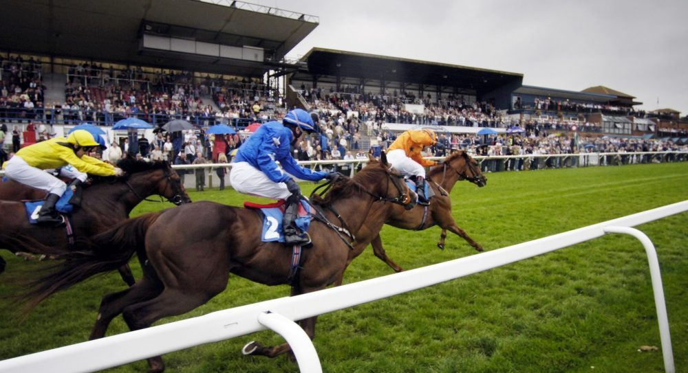

Siete yeguas optarán a la Betway Lester Piggott Fillies' Stakes de Carlisle
El hipódromo británico acogerá este sábado la prueba de Grupo III sobre 11 furlongs y 39 yardas, dotada con 125.000 libras esterlinas. Azaniya, Naga y Patagonia Girl encabezan el lote inscrito.

Foto: myracing.com
Siete yeguas disputarán la Betway Lester Piggott Fillies' Stakes de Carlisle, prueba de Grupo III dotada con 125.000 libras esterlinas y programada para las 15:10 horas del sábado. El recorrido, de 11 furlongs y 39 yardas sobre hierba, reunirá a ejemplares de cuatro años en adelante en una de las citas clásicas del calendario británico de la especialidad de fondo.
Entre las inscritas figuran Azaniya (Night Of Thunder), Coedana (King Of Change), Crepe Suzette (Saxon Warrior), Estrange (Night Of Thunder), Naga (Dubawi), Patagonia Girl (Australia) y Sharpen (Fastnet Rock). La prueba, que lleva el nombre del legendario jockey británico Lester Piggott, se perfila como un test exigente para las participantes en un trazado técnico que favorece a las yeguas de vocación fundista capaces de mantener el ritmo en el último tercio del recorrido.
— Redacción de Galope al Día